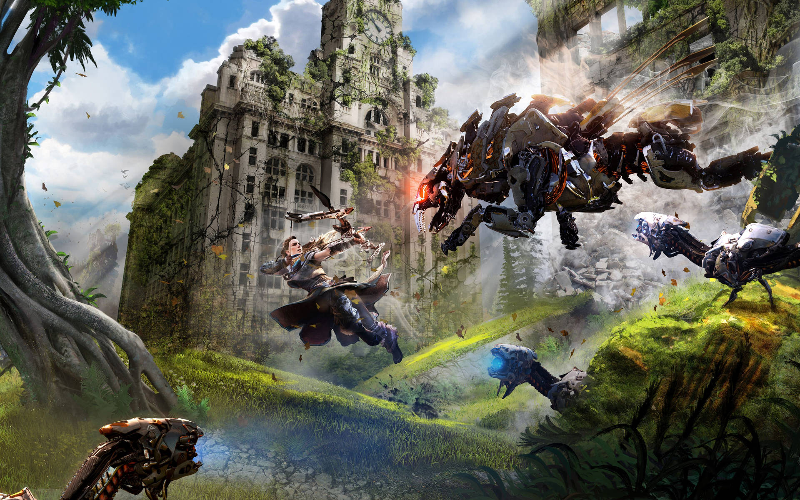
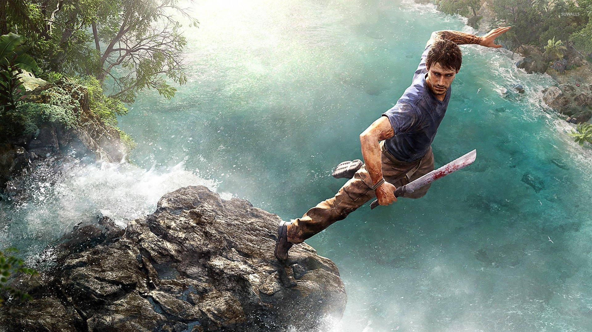
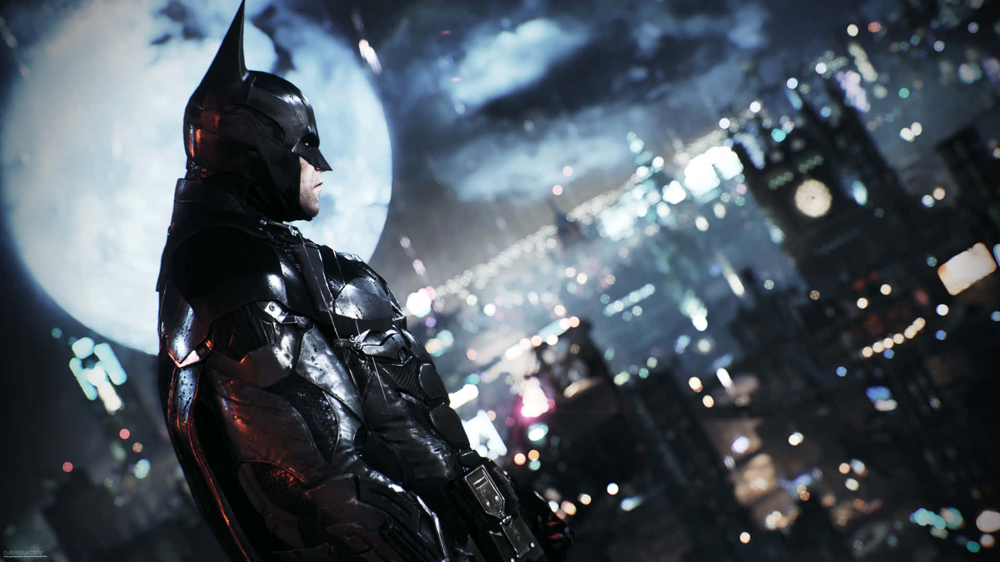
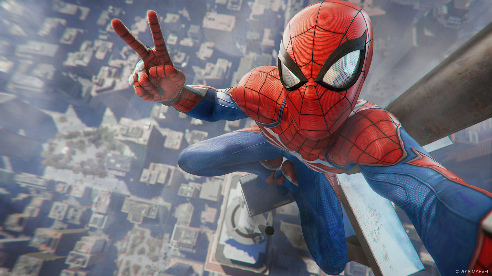
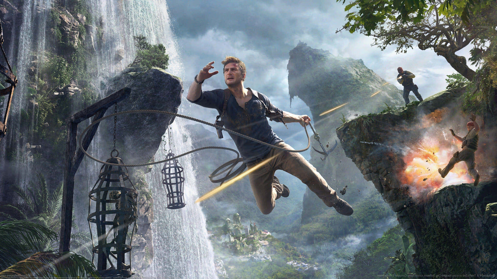
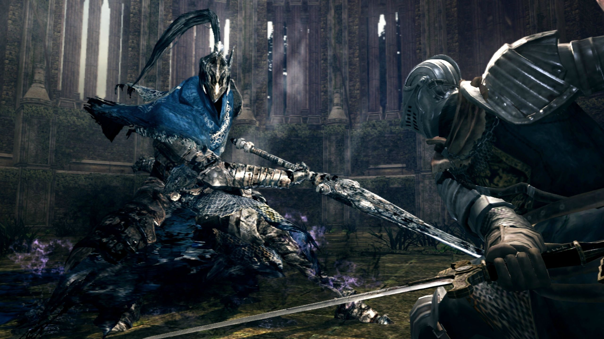
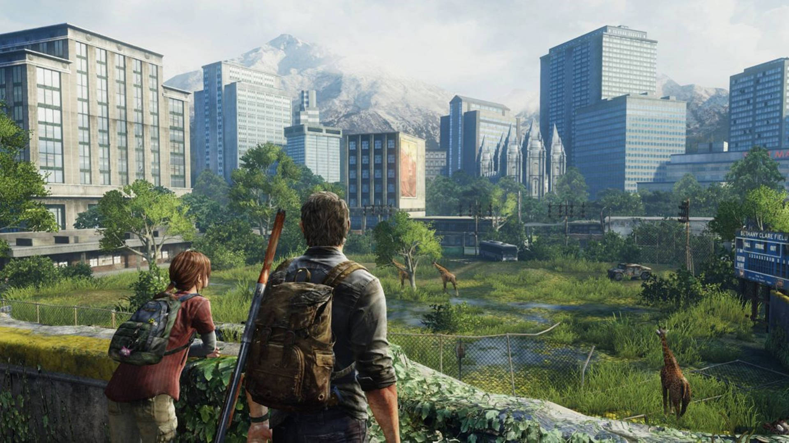
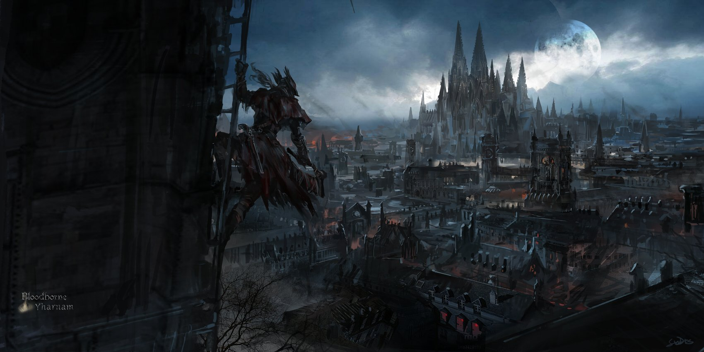

HORIZON ZERO DAWN

Calificación en IMDB: 8.9/10
Géneros: Acción, Aventura, Sci-fi
Sinopsis:En un mundo primitivo donde extrañas, monstruosas y animales máquinas deambulan por la naturaleza, una joven y valiente guerrera emprende una búsqueda para descubrir la verdad sobre su misterioso origen y como se encuentra el mundo.
FUENTEFAR CRY 3

Calificación en IMDB: 8.8/10
Géneros: Thriller, Acción, Drama
Sinopsis: Mientras practican paracaidismo, Jason Brody y sus amigos aterrizan en una isla invadida por piratas, donde Jason se debate entre luchar por la resistencia Rakyat y rescatar a sus amigos.
FUENTERESIDENT EVIL 2 (REMAKE)

Calificación en IMDB: 9/10
Géneros: Horror, Suspenso, Acción
Sinopsis: Reimaginación de Biohazard 2 (1998), con una vista en tercera persona por encima del hombro, nuevos detalles, áreas nuevas y reorganizadas, no más puertas de carga con pantalla, nuevas oportunidades para resolver acertijos, una mecánica de elaboración de pólvora y más.
FUENTEBATMAN ARKHAM KNIGHT

Calificación en IMDB: 9/10
Géneros: Thriller Psicológico, Misterio, Superhéroes
Sinopsis: Entre la espada y la pared, Batman recurre a sus aliados más cercanos para salvar Ciudad Gótica de las garras del Espantapájaros y el ejército del Caballero de Arkham. Un rostro familiar también regresa para darle al Caballero Oscuro un mensaje que no puede ignorar.
FUENTEMARVEL'S SPIDERMAN

Calificación en IMDB: 9.2/10
Géneros: Superhéroes, Acción, Fantasía.
Sinopsis: Un Peter Parker más mayor y con más experiencia sigue lidiando con la dualidad de su vida como superhéroe a la vez que se enfrenta a una amenaza más poderosa que él.
FUENTEUNCHARTED 4: A THIEF'S END

Calificación en IMDB: 9.4/10
Géneros: Aventura, Acción, Tragedia.
Sinopsis: Nathan Drake vuelve al submundo de los ladrones tras la repentina llegada de su hermano pidiéndole ayuda.
FUENTEGOD OF WAR (2018)

Calificación en IMDB: 9.5/10
Géneros: Fantasía Oscura, Acción, Aventura.
Sinopsis: Kratos vive una vida pacífica junto a su hijo Atreus en las tierras nórdicas hasta la muerte de su esposa.
FUENTEDARK SOULS

Calificación en IMDB: 9.1/10
Géneros: Fantasía Oscura, Acción, Tragedia.
Sinopsis: Después de escapar por poco de un destino condenado en un asilo, un guerrero no muerto se abre paso a través de los restos desolados de Lordran, alguna vez una extensa utopía liderada por los dioses, para buscar su propósito y cumplir una profecía de siglos de antigüedad.
FUENTETHE LAST OF US

Calificación en IMDB: 9.7/10
Géneros: Zombie Horror, Survival, Drama.
Sinopsis: En un mundo hostil y pospandémico, Joel y Ellie, unidos por circunstancias desesperadas, deben confiar el uno en el otro para sobrevivir a un viaje brutal a través de lo que queda de Estados Unidos.
FUENTEBLOODBORNE

Calificación en IMDB: 9.3/10
Géneros: Horror, Acción, Sci-fi.
Sinopsis: Un cazador despierta en las tierras plagadas de Yharnam, donde los habitantes han sucumbido a la bestialidad, en un intento por aprender la verdad y cómo acabar con la plaga, sin saber del verdadero horror que acecha dentro de la ciudad.
FUENTE